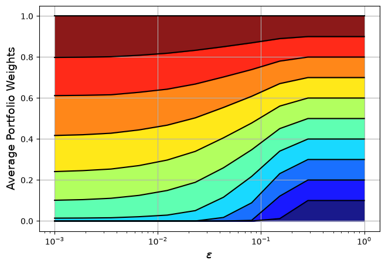

Mean-Risk Portfolio with a Wasserstein Ambiguity Set#
Problem Statement and Parameters#
In this example, we delve into the mean-risk portfolio optimization problem discussed in [MEK18]. Here, the yearly returns of \(m\) assets in a capital market are encapsulated by a random vector \(\tilde{\pmb{z}}\in\mathbb{R}^m\). The investor is tasked with making decisions \(\pmb{x}\in\mathbb{R}^m\), where each \(x_i\) denotes the percentage of available capital invested in the \(i\)th asset. The formulation of the portfolio optimization problem is solved as the following distributionally robust model,
where the ambiguity set \(\mathcal{F}(\epsilon) = \left\{\mathbb{P}\in\mathcal{P}_0(\mathbb{R}^m)\left|d_W\left(\hat{\mathbb{P}}_n, \mathbb{P}\right) \leq \epsilon\right.\right\}\) is the Wasserstein ball of radius \(\epsilon\) centered at the empirical distribution \(\hat{\mathbb{P}}_n\), represented by a sample dataset with \(n\) records. The objective of the robust model is to minimize the weighted summation of the mean and the conditional value at risk (CVaR) of the portfolio loss \(-\tilde{\pmb{z}}^{\top}\pmb{x}\) under the worst-case distribution over the ambiguity set \(\mathcal{F}(\epsilon)\), with the confidence level parameter \(\alpha\in (0, 1]\) and risk-aversion parameter \(\rho \in \mathbb{R}_+\). We follow the piecewise linear expression proposed by [RU00] to reformulate the objective function as its equivalence
where \(K=2\), and coefficients \(a_k\) and \(b_k\) of the piecewise linear function are given below.
In the subsequent numerical studies, model parameters are configured according to [MEK18] as follows,
Number of assets is \(m=10\);
The confidence level is \(1 - \alpha = 80\%\);
The risk-aversion coefficient \(\rho=10\).
epsilon = 1e-2 # radius of the Wasserstein ball
rho = 10 # risk-aversion coefficient
alpha = 0.2 # confidence level
a1, b1 = -1, rho # coefficients of the piecewise expression
a2, b2 = -1 - rho/alpha, rho - rho/alpha # coefficients of the piecewise expression
It is assumed that the random return \(\tilde{z}_i\) of each asset is decomposable into a systematic risk factor \(\psi \sim N(0, 2\%)\) common to all assets and an idiosyncratic risk factor \(\zeta_i\in N(i\times 3\%, i\times 2.5\%)\) specific to asset \(i\). The empirical distribution of the random returns \(\tilde{\pmb{z}}\) is then represented by a randomly generated sample dataset using the norm_return() function defined below.
import numpy as np
def norm_return(n, m):
i = np.arange(1, m+1)
psi = 0.02 * np.random.normal(size=(n, 1))
zeta = 0.03*i + 0.025*i*np.random.normal(size=(n, m))
zhat = psi + zeta
return zhat
In the following code segment, we generate a empirical dataset of \(n=300\) records for \(m=10\) assets. The Wasserstein ball radius \(\epsilon\) is specified to be \(0.01\).
np.random.seed(10)
n, m = 300, 10
zhat = norm_return(n, m)
epsilon = 1e-2
Equivalent Deterministic Problem#
According to Corollary 5.1 of [MEK18], the distributionally robust model above with a one-norm Wasserstein ambiguity set under the unconstrained support \(\Xi=\mathbb{R}^m\) is equivalent to the deterministic linear program
and the deterministic problem is solved by the code below.
from rsome import ro
import rsome as rso
model = ro.Model()
x = model.dvar(m)
lamb = model.dvar()
tau = model.dvar()
c = model.dvar(n)
model.min(lamb*epsilon + (1/n)*c.sum())
model.st(x.sum() == 1, x >= 0)
model.st(b1*tau + a1*(zhat@x) <= c)
model.st(b2*tau + a2*(zhat@x) <= c)
for i in range(n):
model.st(rso.norm(- a1*x, 'inf') <= lamb)
model.st(rso.norm(- a2*x, 'inf') <= lamb)
model.solve()
Being solved by the Scipy LP solver...
Solution status: 0
Running time: 0.0291s
The objective value of the model is shown as follows.
print(f'Minimum objective: {model.get():.4f}')
Minimum objective: -1.2428
Implementation via the RSOME dro Model#
According to [CSX20], the Wasserstein ambiguity set \(\mathcal{F}(\epsilon)\) can be rewritten as
where \(\hat{\pmb{z}}_s\) is the \(s\)th record of the empirical distribution. The distributionally robust optimization problem solved in the previous section can be solved as an RSOME dro model, as demonstrated by the code below.
from rsome import dro, E
import rsome as rso
model = dro.Model(n)
x = model.dvar(m)
tau = model.dvar()
z = model.rvar(m)
u = model.rvar()
fset = model.ambiguity()
for s in range(n):
fset[s].suppset(rso.norm(z - zhat[s], 1) <= u)
fset.exptset(E(u) <= epsilon)
pr = model.p
fset.probset(pr == 1/n)
r = z @ x
model.minsup(E(rso.maxof(a1*r + b1*tau,
a2*r + b2*tau)), forall=fset)
model.st(x.sum() == 1, x >= 0)
model.solve()
Being solved by the Scipy LP solver...
Solution status: 0
Running time: 0.5920s
print(f'Minimum objective: {model.get():.4f}')
Minimum objective: -1.2428
Impact of the Wasserstein Radius#
In this section, we will visualize the optimal investment decisions under different values of Wasserstein radius \(\epsilon\). The distributionally robust portfolio model is defined as the following function portfolio_wass(), where the input arguments are the empirical distribution zhat and the selected radius value epsilon.
from rsome import dro
from rsome import cpt_solver as cpt
from rsome import E
import rsome as rso
def portfolio_wass(zhat, epsilon):
n, m = zhat.shape
model = ro.Model()
x = model.dvar(m)
lamb = model.dvar()
tau = model.dvar()
s = model.dvar(n)
model.min(lamb*epsilon + (1/n)*s.sum())
model.st(x.sum() == 1, x >= 0)
model.st(b1*tau + a1*(zhat@x) <= s)
model.st(b2*tau + a2*(zhat@x) <= s)
for i in range(n):
model.st(rso.norm(- a1*x, 'inf') <= lamb)
model.st(rso.norm(- a2*x, 'inf') <= lamb)
model.solve(cpt, display=False)
return x.get()
Then the function is invoked under different Wasserstein radius values in the following code segment, and the experiments are repeated for repeats=50 times.
from multiprocess import Pool
n, m = 300, 10
n_jobs = 12
repeats = 50
epsilon_values = 10 ** np.linspace(-3, 0, 12)
sols = np.zeros((repeats, len(epsilon_values), m))
for rep in range(repeats):
zhat = norm_return(n, m)
with Pool(n_jobs) as pr:
params = [[zhat, epsilon] for epsilon in epsilon_values]
results = pr.starmap(portfolio_wass, params)
sols[rep] = np.array(results)
Finally, the average portfolio weights are illustrated by the following figure. Please refer to Fig. 4 of [MEK18] for the same results.
import matplotlib.pyplot as plt
import matplotlib as mpl
plt.figure(figsize=(7.5, 5))
sols_mean = sols.mean(axis=0)
bottom = 0
colors = mpl.colormaps['jet'](np.linspace(0, 1, m))
for i in range(m):
plt.fill_between(epsilon_values, bottom, bottom+sols_mean[:, i],
alpha=0.9, color=colors[i])
plt.plot(epsilon_values, bottom+sols_mean[:, i],
linewidth='1.5', color='k')
bottom += sols_mean[:, i]
plt.xscale('log')
plt.xlabel(r'$\epsilon$', fontsize=14)
plt.ylabel('Average Portfolio Weights', fontsize=14)
plt.grid()
plt.show()

Reference
Zhi Chen, Melvyn Sim, and Peng Xiong. Robust stochastic optimization made easy with RSOME. Management Science, 66(8):3329–3339, 2020.
Peyman Mohajerin Esfahani and Daniel Kuhn. Data-driven distributionally robust optimization using the wasserstein metric: performance guarantees and tractable reformulations. Mathematical Programming, 171(1-2):115–166, 2018.
R Tyrrell Rockafellar and Stanislav Uryasev. Optimization of conditional value-at-risk. Journal of risk, 2:21–42, 2000.